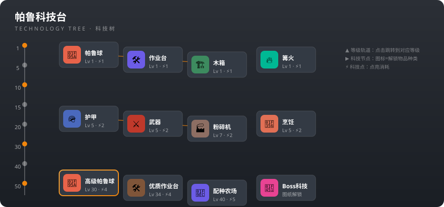

科技树图 - 幻兽帕鲁全科技解锁查询
按游戏内科技面板的样式，把全部 297 项科技按等级摊开：左侧是等级轨道，每一级横排该级能点的科技。科技点数是稀缺资源，先点关键科技（帕鲁球、作业台、帕鲁蛋孵化器、抓钩枪等），再补生产类科技。

帕鲁科技台
TECHNOLOGY TREE
没有匹配的科技，换个关键词试试。
说明：科技在帕鲁科技台解锁，消耗科技点数；Boss 科技需要击败对应高塔/野外 Boss 获得图纸后才能解锁。点击任意科技节点可高亮它的升级链，点击上方科技链标签直接查看完整路线。